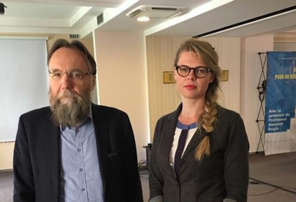
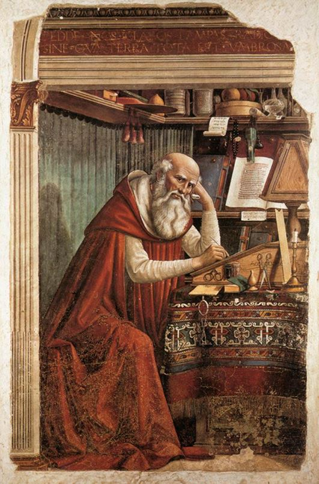
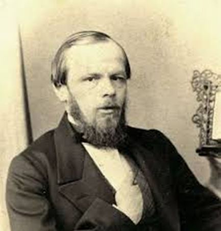
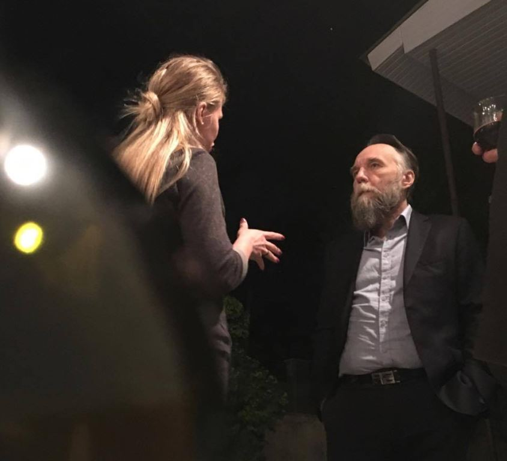
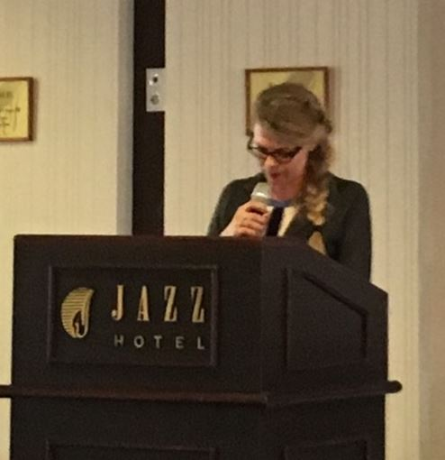

Dans le cadre de ce colloque j’ai choisi de parler de l’Homme car c’est lui qui crée l’histoire et en assume les conséquences aussi personnelles qu’historiques. Lors de mon intervention vous entendrez souvent le mot « Occident ». Il s’agira aussi les États-Unis que les pays de l’Union européenne.
On oublie souvent aujourd’hui (ici dans les pays européens esclaves des États-Unis) que l’unité qui mesure la vie c’est l’Homme et non pas la monnaie. En parlant de l’Homme je rappellerai les choses qui doivent normalement être évidentes telles que son fonctionnement anthropologique de l’être, sa nature, ses besoins, ses instincts, ses peurs et ses aspirations.
Nous souhaitons tous ici présents de voir le rapprochement des pays de la grande Europe avec la Russie afin de former un bloc fort se basant sur les intérêts communs, aussi économiques qu’historiques et spirituels. Ce bloc formerait une sorte de contre-poids aux États-Unis et défendrait ainsi la multipolarité des forces mondiales. Même si la différence civilisationnelle est énorme entre le chemin historique fait par la Russie et celui du monde occidental (rappelons-nous qu’il s’agit de la civilisation contemplative dans le cas de la Russie et de la civilisation active dans le cas de l’Occident), la ressemblance du fond entre ses deux mondes est encore plus grande car ils ont la même provenance gréco-romaine. Donc si nous voulons rapprocher les peuples d’Eurasie le plus judicieux serait d’accentuer leur ressemblance et non pas leurs différences. Le point de départ est ainsi la vision du monde héritée du christianisme. Sans forcément parler de la foi, meme si, idéalement, la foi chrétienne devrait être le maillon essentiel de cette union eurasienne), je me contente de sous-entendre ici plutôt les valeurs qui étaient notre pilier commun les siècles durant, les valeurs qui servaient de point de repères. Et c’est ces valeurs-là qui constituent aujourd’hui notre bagage historique. Notre appréhension de la mort et de la vie, notre rapport à l’autrui, notre éthique et notre esthétique nous ont été transmis par nos ancêtres chrétiens. On le veut ou non mais la vision du monde chrétienne fait partie de notre mental.
Jusqu’il n’y a pas longtemps, la distinction entre le bien et le mal était claire et intouchable. « Le monde a été travaillé depuis vingt siècles par un ferment qui est l’Evangile1 », - écrira un académicien français, russophile et apologiste du christianisme, Eugène-Melchior de Vogüé. Aujourd’hui, ce fondement a perdu son immunité parce que l’Homme s’est donné le droit de remettre en question son passé, son histoire et même la nature de son être. Il va jusqu’à se renier entièrement au nom de la pseudo-liberté. Il renie ses instincts aussi vieux que l’humanité tels que le besoin de transcendance, de beauté et de mystère.
L’argent et la consommation sont venus remplacer toute spiritualité. Le temps semble avoir vaincu l’éternité. Souvenez-vous de ce fameux article paru en 2003 dans la revue Le Monde intitulé « A quoi sert la croissance si elle ne rend pas plus heureux ? ». Aujourd’hui, cette question est plus que d’actualité. On pourrait même la reformuler : « A quoi sert le culte de l’ultra-progressisme si il ne rend pas plus heureux ? ». L’Homme occidental a oublié la Tradition et l’Histoire de son espèce. L’Homme ici ne contemple plus le monde, pire encore, il cherche à modifier selon ses lubies du moment l’ordre et l’harmonie de l’univers en se croyant plus malin que la vie. En disant cela, je ne remets aucunement en question la liberté individuelle et le progrès humain car n’oublions pas que l’homme c’est un être qui est soumis en continue au processus d’évolution. La seule chose que je critique c’est le progrès malsain. J’aimerais ici citer une magnifique phrase de Saint-Augustin « D’abord apprends à aimer et puis fais ce que tu veux ! ».
Il y a des axiomes dans la vie humaine que nous n’avons pas le droit de transgresser. Nous avons la liberté de faire ce que l’on veut tant que les règles éternelles du jeu « Bien vs Mal » ainsi que l’Amour (dans le sens de la source primaire de la vie) restent intacts. Ses règles, cette morale et cet amour, quand il s’agit de notre civilisation eurasienne, viennent historiquement du christianisme. Et quand on remet en question ces règles au nom du progrès, de l’argent et du plaisir on enlève à l’homme sa mémoire collective historique. Vous rendez-vous compte à quel point c’est grave ? Il s’agit de la déshumanisation de l’homme. Le long de l’Histoire l’Homme a naturellement appris à aimer, à protéger, à se sacrifier, à être courageux, à compatir. L’Homme s’est naturellement mis à transmettre ses savoirs et ses acquis de génération en génération. Il s’est mis à fonder des familles, des Etats, à protéger ses familles et à protéger ses Etats et ses terres parce que chaque terre a commencé à se développer en faisant naître ses propres traditions culturelles établies en adéquation avec le positionnement géographique, les conditions climatiques, la façon verbale de communiquer et les premières images culturelles propres à chaque peuple, tout en ayant, je parle toujours du territoire eurasien, le même point de départ et de repères : la vision du monde conditionnée par le christianisme. C’est l’arrivée du Christ qui a fait l’Homme contemporain avec ses conceptions morales et sociales, son esthétique, son inclination d’esprit et de cœur vers les petites choses et les petits gens. Chaque culture de la Grande Eurasie est différente mais elles toutes sont en lien fort entre elles. Revenons à l’expression de Saint-Augustin citée tout à l’heure : « Aime et fais ce que tu veux ! ». Notre point commun, notre base c’est l’Amour (autrement dit, la tradition chrétienne) et en partant de cela chaque culture peut faire ce qu’elle veut !
En effaçant notre passé, les adeptes de l’ultra-progressisme veulent nous faire renaître aujourd’hui vide de tout : de toute les valeurs, de toute connaissance naturelle et universelle, de tout sentiment de bon sens, de toute foi dans le mystère, de toute palette sentimentale propre à l’Homme tout court, en lui vendant le projet du bonheur de consommateur, bonheur « liquide », en utilisant le terme de Zygmunt Bauman. Protéger sa culture et sa tradition c’est devenu un crime, tandis qu’il n’existe pas de chose plus normale et naturelle que cela !
Mais une chose est sûre, tôt ou tard les vieux instincts se ranimeront. Il existe chez Vogüé un très beau développement à ce sujet. Il estime que l’homme cherchera à nouveau au-dessus de lui un pouvoir surhumain et tournera à nouveau son regard vers le Ciel car le fond de l’être humain ne change pas2. J’aimerais également citer ici une de mes dernières découvertes, Peter Berger : «Quelles qu’en soient les raisons, bien des « hommes modernes » se sentent toujours attirés par le grandiose, le mystère, par toutes ces réalités qu’un rationalisme sécularisé rejette violement3».
Vogüé, en abordant le sujet du mystère, donne un très bel exemple avec un microscope et un télescope : «Comme tout ce qui vit, - écrit-il, - la foule regarde en haut ; placez-la entre un microscope et un télescope : les deux magiciens font voir des merveilles, et pourtant la foule n’hésitera pas, elle ira aux étoiles4».
Ou encore, souvenez-vous chez Dostoïevski :
On entend déjà les sanglots de souffrance morale de toute l’humanité ; le mal gagne tous les peuples d’Europe ; ils s’agitent, les malheureux, ne sachant pas comment se soulager ; tous les remèdes, tous les secours que leur raison invente leur sont insupportables et ne procurent aucun bien. Ces gémissements vont encore augmenter, jusqu’au jour où le cœur le plus dur se brisera de pitié, où une force de compassion inconnue jusqu’ici suscitera une force d’amour également inconnue. L’homme s’enflammera pour l’humanité d’un amour plus ardent que le monde n’en vit jamais.
Il ne faut pas oublier que l’amour pour l’humanité ne se résume pas à la défense des droits des migrants et à la propagande des LGBT (à cette abréviation on ajoute, d’ailleurs, aujourd’hui en Europe la lettre X, ce qui signifie « tout autre genre existant »). Et il y en a pas mal de nos jours ! Toute perversion sexuelle est considérée comme un genre à part. Mais c’est tout un autre sujet). Aujourd’hui on reproche aux traditionalistes de s’enfermer dans leur idée de nation et de vouloir isoler l’Homme de l’Humanité. Mais je tiens à rappeler ici que la vision du monde prônant les valeurs chrétiennes et l’enracinement a tout autant pour but ultime l’union de toute l’humanité et son bonheur commun. L’un n’empêche pas l’autre ! L’idée vient initialement de l’image biblique de l’entité du corps du Christ. A ce sujet, Nicolas Berdiaev affirme, par exemple, que l’Humanité a toujours rêvé de l’union du genre humain. Mais, à son avis, elle ne peut réussir cette union que par la voie de l’individualisation nationale. Le philosophe voit l’Histoire universelle comme une interaction complexe des différentes échelles (égales entre elles) de la hiérarchie mondiale des individualités. Une échelle se fusionne ici avec une autre : l’Homme rentre dans la nation, la nation rentre dans l’Humanité, l’Humanité rentre dans le Cosmos et le Cosmos – dans Dieu. Ainsi, l’Homme ne rentre dans l’Humanité que par biais de son individualité nationale. L’être humain n’a donc pas été fait pour sauter les étapes de son existence. L’opposition de la nation à l’Humanité est, pour Berdiaev, aussi insensé que d’opposer une partie à l’entité ou un organe à l’organisme. La nation est donc pour Berdiaev un Être individuel hors lequel l’existence de l’Humanité est impossible5. Donc aimer l’humanité c’est avant tout aimer la personne en face de toi, respecter ton pays et tes traditions.
L’Homme demeure avec son éternel besoin d’amour, de sympathie, d’espérance, de transcendance, d’harmonie, de morale et de foi dans le mystère.
Comme, dans le cas de notre civilisation eurasienne, il s’agit de la tradition chrétienne, le rapprochement entre les pays de l’Eurasie doit se baser sur les valeurs chrétiennes. Pas les valeurs imposées par le Contrat social, mais les valeurs instinctives qui se sont immortalisées dans le christianisme. Faisant référence au philosophe français contemporain Gilles Lipovetsky je tiens à rappeler la réalité suivante : dans la société occidentale actuelle comme dans toute la société démocratique contemporaine, les principes moraux de fond sont représentées par les droits de l’homme6.
Cette affirmation fait surgir la différence majeure entre l’Occident et la Russie. La Russie reste le pays qui revendique son noyau religieux et avec cela la morale naturelle (ce sujet a d’ailleurs été très bien éclairé par Oswald Spengler dans un des chapitres de son Déclin de l’Occident). Ainsi, toute réflexion sur le sujet de l’union entre les peuples de l’Eurasie doit être basée sur la tradition historique commune. Nous devrions prendre en considération le rôle non négligeable de la Russie dans ce projet. La Russie est aujourd’hui le seul rempart de la survie européenne parce que c’est la Russie seule qui garde intact le fond spirituel de notre civilisation eurasienne. Rappelons-nous l’histoire : Durant plusieurs siècles, il n’existait qu’une seule civilisation chrétienne, la même pour l’Orient et l’Occident. Cette civilisation fut née et développée en Orient. Quant à la civilisation chrétienne occidentale proprement dite, elle apparut beaucoup plus tard. Guéorgui Florovsky en parle d’ailleurs très bien dans son article Christianisme et civilisation. Le noyau spirituel que la Russie a hérité de la Byzance continue à jouer un rôle fondamental dans la vie du pays. Un tel exemple de tradition forte dûe à la présence inébranlable de l’orthodoxie pourrait très bien inspirer les pays européens, leur redonner l’espoir et les faire revenir aux fondements de leurs propres cultures. « Il est grand temps de réagir, - écrira René Guénon dans sa Crise du Monde moderne, - et c'est ici que l'Orient peut venir au secours de l'Occident, si toutefois celui-ci le veut bien, non pour lui imposer des conceptions qui lui sont étrangères, comme certains semblent le craindre, mais bien pour l'aider à retrouver sa propre tradition dont il a perdu le sens7».
Dans cet état des choses, le rôle messianique que la Russie a toujours eu la tendance de s’attribuer pourrait très bien être justifié. L’idée que la Russie est un pays-messie est partagée par de nombreux grands penseurs et écrivains russes tels que, par F. Dostoïevski, V. Soloviev, N. Berdiaev et S. Frank. Russophile et chrétienne, la philosophie russe se construit autour des réflexions sur les particularités nationales russes qui ne sont envisageables qu’au prisme de l’orthodoxie. La destiné messianique mondiale – voilà le sens de « l’idée russe », concept central de la philosophie de Vladmir Soloviev et de celle de Nicolas Berdiaev. Quant à Dostoïevski, il parle ouvertement de la supériorité de la Russie sur les autres pays. L’écrivain explique cette supériorité par l’universalisme propre à la pensée russe :
Tout Français est prêt à servir non seulement sa patrie mais même l’humanité, à la seule condition de rester le plus français possible, même chose pour l’Anglais ou l’Allemand. Seul le Russe, même de nos jours, c’est-à-dire bien avant que l’on fasse le bilan général de l’humanité, a reçu le don de devenir le plus russe au moment même où il est le plus européen. Là est la différence la plus radicale entre eux et nous […]. En France, je suis français, mais, avec les Allemands, je suis allemand, avec les Grecs antiques, je suis grec et par cela même, je suis le plus russe possible, et je sers mieux la Russie, car je proclame son idée maîtresse8.
Selon l’écrivain, l’homme russe est « pan-humain9 » ce qui le rend capable de comprendre l’universel, autrement dit comprendre tous les pays et leurs traditions. Quant à la mission de la Russie et son devoir mondial, l’écrivain les voit dans l’aide à la résurrection de l’Europe10. Cette dernière, aujourd’hui, doit sérieusement réfléchir à son choix : s’orienter vers les États-Unis et continuer à jouer le jeu globaliste en avançant dans le projet de l’uniformisation impitoyable détruisant tout ce qui est d’humain dans l’Homme, ou bien se rapprocher de la Russie et retrouver ainsi leurs libertés nationales, leurs traditions spirituelles et les conditions pour rendre l'Homme foncièrement heureux.
Pour que les pays d’Europe puissent basculer de côté de la Russie, l’esprit et l’essence de cette dernière doivent être présentés aux Européens d’une manière digne et valorisante. Et c’est là où nous tous ici présents pouvons et devons mettre en œuvres nos compétences et notre influence. Réinformer et expliquer – voilà le devoir de chaque personne, physique ou juridique, prenant à cœur le sujet du rapprochement des pays du reste de l’Eurasie avec la Russie.
Pour faire avancer l’idée de l’espace eurasien commun et sain nous devrions mettre en place la coopération efficace entre toute personne et tout réseau s’engageant dans cette direction. Essayons d'organiser plus de manifestations nous permettant de se revoir. Par exemple, mettre en place un colloque international annuel. Les états d’esprit doivent être encouragés, les idées doivent être échangées. Pour cela, toutes les organisations, les cercles et les associations doivent connaître leur existence mutuelle pour pouvoir communiquer entre eux et être ainsi encore plus productif. Ensemble nous seront plus forts. Merci pour votre attention.
A.G.
1 Eugène-Melchior de Vogüé, Le Roman russe [1886], Éd. critique par Jean-Louis Backès, Paris, Editions Classiques Garnier, 2010, p. 89.
2 Ibid., p. 88.
3 Peter Berger, La Rumeur de Dieu. Signes actuels du surnaturel [1970], trad. de l’anglais par J. Feisthauer, Paris, Centurion, coll. « Religion et Sciences de l’homme », 1972, p.54.
4 Eugène-Melchior de Vogüé, Le Roman russe, op. cit., p. 403.
5 Nikolaj Berdjaev, « Konec Evropy » [Fin de l’Europe], in Nikolaj Berdjaev, Sud’ba Rossii [Destin de la Russie], M., 1918.
6 Gilles Lipovetsky (A.), Sébastien Charles (A.), Les Temps hypermodernes, Paris, Grasset, coll. « Nouveau collège de philosophie », 2004, p. 171.
7. René Guénon, La Crise du Monde moderne, Paris, Gallimard, 1946.
8Fëdor Dostoevskij, Podrostok [Adolescent] [1875], Berlin, Izdatel’stvo I. ladyžnikova, 1921, p. 612. Le présent extrait en français a été pris dans F. Dostoïevski, Un adolescent, trad. de J. W. Bienstock et F. Fénéon, Paris, Édition de la Revue Blanche, 1902.
9 Fiodor Dostoïevski, Journal d’un écrivain [1873-1881], trad. du russe par J.-Wladimir Bienstock et John-Antoine Nau, Paris, Charpentier, 1904, p. 603.
Partager cette page